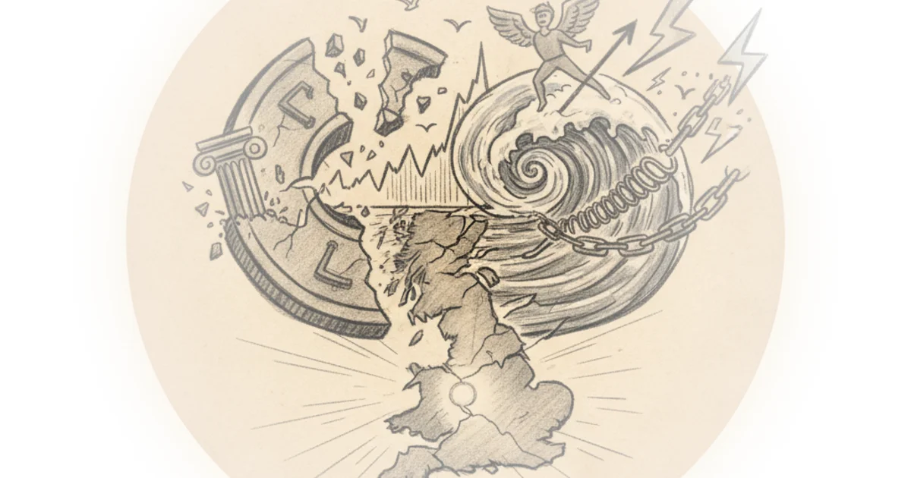

What if everything you learned about how money works in school was fundamentally wrong? That's the provocative claim from Steve Keen, a economist who has spent decades attacking the mainstream profession from outside its gates. He argues that economists have systematically misunderstood what banks actually do — and that this misunderstanding explains why house prices spiraled out of control after 1980, why financial crises keep happening, and why governments are terrified of bond markets for no good reason.", ## The Rebel Economist
Steve Keen doesn't sound like a typical economist. He's spent his career essentially giving up on the mainstream profession ever correcting its course — so instead, he attacks it from outside.

He's not alone in this critique. There are thousands of economists worldwide who see fatal flaws in the conventional theory that has dominated since 1870. But Keen is unusual: he actually built software models to prove exactly where mainstream economics breaks down. He's also known for predicting the 2008 financial crisis when most other economists were still assuring everyone that banks had everything under control.
The Problem with Mainstream Economics
The core issue, according to Keen, comes down to how economists explain money creation.
Textbook economics teaches what's called the "money multiplier" or "fractional reserve banking" model. The story goes: you deposit savings in a bank, and that bank lends those savings out to others. There's a relatively fixed supply of savings — money that people have put away — and banks act as intermediaries between savers and borrowers.
This leads to what economists call the "loanable funds" model. If government borrows these savings, there's less left for private sector borrowing. It sounds logical. It's completely wrong.
Conventional theory literally tells you the exact opposite of what applies in the real world.
How Banks Actually Create Money
Here's where Keen's argument gets interesting. He says banks have a unique power: they're the only institution allowed to mark up both their assets and liabilities at the same time.
When someone applies for a loan, the bank assesses whether they can repay. If the bank decides yes, it doesn't transfer money from one account to another — it creates new money out of nothing.
The loan increases the borrower's deposits at the same time as increasing the bank's assets. Loans create deposits. Both rise together. Nothing runs down.
This is why financial crises are so dangerous: every loan made adds to the money supply until that debt gets paid back, at which point it disappears. The money supply expands and contracts dramatically based on debt cycles — something conventional economics completely misses.
Why House Prices Spiked After 1980
Here's where Keen's analysis becomes concrete. From 1850 to 1980, house prices doubled over 130 years — roughly stable. After 1980, they tripled in just 40 years.
The standard explanation focuses on supply and demand: we stopped building enough houses, more people wanted to live in cities, immigration increased.
Another explanation points to inequality: wealthy families accumulating cash and buying housing as speculative assets.
But Keen points to something else. After 1980, restrictions on banks were removed, making it dramatically easier to lend for mortgages. Every new loan essentially creates new money that chases after houses — driving up prices not because of demand from people who need homes to live in, but because the entire system suddenly had more money created out of thin air.
It's an asset price spiral driven by banking deregulation, not just regular supply and demand.
The Government Debt Debate
The second half of this conversation turns to Modern Monetary Theory — MMT — and whether governments should worry about deficits.
Re Rachel Reeves' decision not to raise income tax has spooked the markets. Bond markets are selling off government debt, pushing yields up.
Keen argues the government shouldn't be scared of bond markets. He points to MMT: sovereign currencies can always service their debts in their own currency. The government isn's like a household — it creates its own money.
This is controversial among more conventional economists who worry about inflation and debt sustainability.
Critics might note that Keen's position on deficits underestimates the risks of fiscal expansion during periods of economic stress, particularly when central bank independence becomes politically contested. The debate is especially relevant right now as Rachel Reeves navigates her first budget.